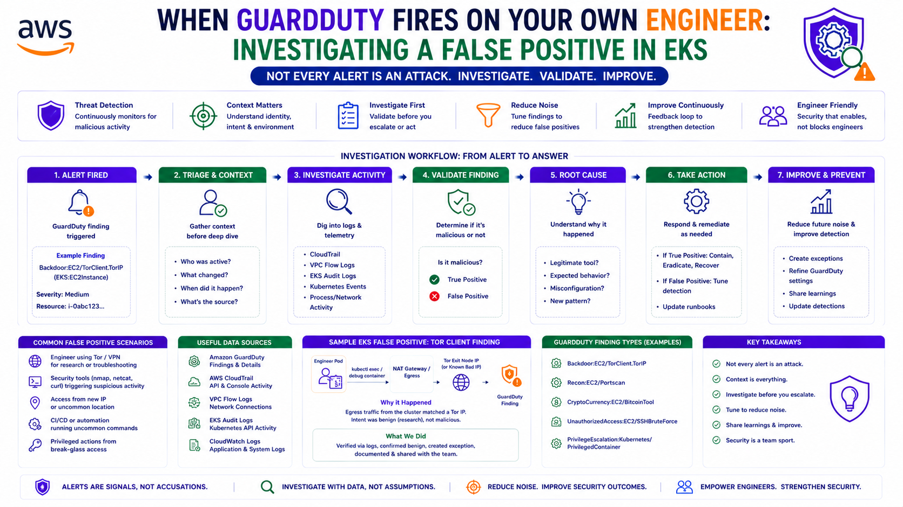
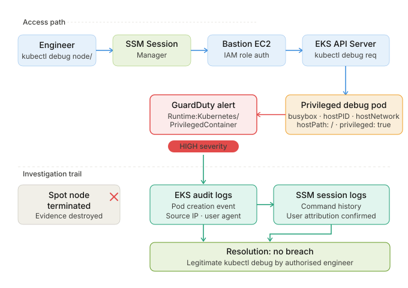

When GuardDuty Fires on Your Own Engineer: Investigating a False Positive in EKS
Production Deep Dive — Real problems, non-obvious solutions, working code.

TL;DR
kubectl debug node creates a privileged pod with sensitive host mounts. To GuardDuty, this is
indistinguishable from a container escape attack. When the alert fires, the Spot node that hosted the debug
pod is already terminated — taking all runtime evidence with it. The investigation pivots to SSM Session
Manager logs and bastion host command history. No breach. Legitimate debugging. Three structural changes to
prevent the same ambiguity next time.
The Alert
On May 29, 2026, GuardDuty generated a finding:
Finding Type: Runtime:Kubernetes/PrivilegedContainer
Severity: HIGH
Namespace: kube-system
Image: busybox (matched node-debugger pattern)
Description: A container running with privileged security context
and sensitive host path mounts was detected.
This behavior is associated with container escapes
and privilege escalation attacks.The finding was accurate. A privileged container with sensitive host mounts had run on an EKS node. What GuardDuty could not determine — and what took a full investigation to confirm — was whether this was an attacker or an engineer.
Why GuardDuty Fires on kubectl debug
This is the detail most post-mortems skip. Understanding why GuardDuty generates this finding is the foundation for both the investigation and the fix.
kubectl debug node/<node-name> works by scheduling a privileged pod on the target node
with access to the host's process namespace, filesystem, and network. This is by design — it gives you a
shell on the underlying EC2 instance for exactly the kind of deep debugging that container-level access
cannot provide.
# What the engineer ran
kubectl debug node/ip-10-0-1-45.eu-west-1.compute.internal \
-it --image=busybox -- chroot /hostUnder the hood, Kubernetes creates a pod spec that looks like this:
spec:
hostPID: true # Access to host process namespace
hostNetwork: true # Access to host network
hostIPC: true # Access to host IPC namespace
containers:
- name: node-debugger-<random> # GuardDuty matches this pattern
image: busybox
securityContext:
privileged: true # This is what triggers the finding
volumeMounts:
- mountPath: /host
name: host-root
volumes:
- name: host-root
hostPath:
path: / # Sensitive host mountFrom a threat intelligence perspective, this pod specification is identical to what an attacker running a container escape exploit would create. GuardDuty has no context about who initiated the pod, why, or whether it was expected. It sees a privileged container with host access and generates a HIGH severity finding. This is correct behaviour.
The problem is not that GuardDuty fired. The problem is that there was no mechanism to distinguish a legitimate debug session from an attack — before, during, or immediately after.
The Investigation
Phase 1 — The First Dead End
The immediate response to a HIGH severity GuardDuty finding on a production EKS cluster is to check the node. By the time the investigation began, the node in question had already been terminated.
This was a Spot instance. Karpenter had received an interruption notice, drained the node gracefully, and terminated it. All runtime evidence — the pod, its filesystem, its process list, any artefacts left by the debug session — was gone. The ephemeral nature of Spot instances, which is an operational and cost advantage in every other context, had destroyed the evidence before the investigation could begin.
This is the first structural gap: Spot nodes can destroy runtime evidence before security investigations begin.
Phase 2 — Pivot to the Control Plane
With no node to inspect, the investigation shifted to what did persist: the Kubernetes API server audit logs and the EKS control plane.
# Query EKS audit logs — find pod creation events around the alert time
aws logs filter-log-events \
--log-group-name "/aws/eks/prod-eks-cluster/cluster" \
--filter-pattern '{ $.objectRef.resource = "pods" && $.verb = "create" }' \
--start-time 1748523000000 \
--end-time 1748524200000 \
--query 'events[].message' \
--output text | python3 -m json.toolThe audit logs confirmed pod creation in kube-system at 14:21 UTC — two minutes before the
GuardDuty finding. The pod name matched the node-debugger-* pattern. The user agent showed
kubectl/v1.30.0. The source IP was an internal RFC1918 address.
This narrowed the scope significantly. The request came from inside the network, from a kubectl client, not from a compromised pod or an external attacker. But "from inside the network" covers both legitimate engineers and a compromised internal system.
Phase 3 — The Bastion Host
The source IP traced to the bastion EC2 instance. The bastion host is the single point of entry to the EKS API server for human operators — accessed via SSM Session Manager with no open inbound ports.
# SSM Session Manager — list sessions from the investigation window
aws ssm describe-sessions \
--state "History" \
--filters \
Key=InvokedAfter,Value=2026-05-29T14:00:00Z \
Key=InvokedBefore,Value=2026-05-29T15:00:00Z \
--query 'Sessions[].{User:Target,StartDate:StartDate,Owner:Owner}' \
--output tableSSM Session Manager logs every session — who authenticated, when they connected, and (with CloudWatch logging enabled) every command executed during the session. The logs showed one active session during the investigation window. The session owner was an IAM role mapped to a specific engineer.
# Command history from the SSM session — retrieved from CloudWatch Logs
aws logs filter-log-events \
--log-group-name "ssm-session-logs" \
--filter-pattern '{ $.sessionId = "session-id-from-ssm" }' \
--query 'events[].message' \
--output textThe command history confirmed it:
Root cause confirmed: legitimate debugging session by an authorised engineer. No breach. No attacker. No compromise.
The engineer had been investigating a node-level networking issue and used kubectl debug to
inspect the host network stack — a completely valid use of the tool. The problem was not the action. The
problem was the absence of any mechanism to communicate that intent before, during, or after the session.
The Architecture — What Existed
User (Engineer)
↓
SSM Session Manager (no open ports — correct)
↓
Bastion EC2 (IAM Role → EKS API access)
↓
kubectl debug node/<name>
↓
EKS API Server
↓
Privileged Debug Pod (busybox, hostPID, hostNetwork, hostPath: /)
↓
GuardDuty Detection: Runtime:Kubernetes/PrivilegedContainerThe access path was correctly designed — SSM Session Manager, bastion host, IAM role. The gap was in attribution and communication, not access control.
The Three Structural Changes
The goal of the remediation is not to prevent kubectl debug — it is a legitimate and necessary
tool. The goal is to make legitimate use of it distinguishable from an attack so that the next
GuardDuty finding of this type can be resolved in minutes rather than hours.
Change 1 — EKS Audit Logs to CloudWatch (Non-Negotiable)
The investigation required querying EKS audit logs. Those logs only existed because audit logging had been enabled on the cluster. This should be enforced as a deployment requirement — not an optional configuration.
# EKS cluster — audit logging is mandatory
resource "aws_eks_cluster" "main" {
name = var.cluster_name
version = var.cluster_version
enabled_cluster_log_types = [
"api", # API server requests
"audit", # ← Required — records who did what to which resource
"authenticator", # Authentication events
"controllerManager",
"scheduler"
]
# ...rest of cluster config
}
# CloudWatch log group — retain audit logs for investigation window
resource "aws_cloudwatch_log_group" "eks_audit" {
name = "/aws/eks/${var.cluster_name}/cluster"
retention_in_days = var.environment == "prod" ? 90 : 30
kms_key_id = aws_kms_key.logs.arn
tags = local.common_tags
}Without audit logs, Phase 2 of the investigation would have failed. The source of the pod creation would have been unknown.
Change 2 — SSM Session Command Logging to CloudWatch
SSM Session Manager was already in use — the access path was correct. But command logging was not fully configured. Full command capture requires explicit CloudWatch configuration on the SSM Session preferences document.
# SSM Session Manager preferences — enforce command logging
resource "aws_ssm_document" "session_preferences" {
name = "SSM-SessionManagerRunShell"
document_type = "Session"
document_format = "JSON"
content = jsonencode({
schemaVersion = "1.0"
description = "Session Manager preferences — command logging enforced"
sessionType = "Standard_Stream"
inputs = {
# CloudWatch — every command logged
cloudWatchLogGroupName = aws_cloudwatch_log_group.ssm_sessions.name
cloudWatchEncryptionEnabled = true
cloudWatchStreamingEnabled = true # Real-time streaming — not batch
# S3 — archive for long-term retention
s3BucketName = aws_s3_bucket.ssm_session_logs.bucket
s3KeyPrefix = "ssm-sessions/"
s3EncryptionEnabled = true
# Prevent engineers from disabling logging within a session
shellProfile = {
linux = "export HISTFILE=/var/log/ssm-session-history; set -o history"
}
}
})
}
resource "aws_cloudwatch_log_group" "ssm_sessions" {
name = "/aws/ssm/sessions"
retention_in_days = 90
kms_key_id = aws_kms_key.logs.arn
}With this configuration, every command executed in every SSM session is captured in real time to CloudWatch. The next investigation of this type does not require manual history reconstruction — the command log is queryable immediately.
Change 3 — Karpenter Node Preservation Policy for Security Investigations
The most operationally significant gap: evidence destroyed by Spot interruption before investigation could begin. The fix is a Kubernetes annotation that prevents Karpenter from disrupting a node when a security investigation is active.
# Immediately after a GuardDuty alert fires — annotate the node
# This prevents Karpenter from consolidating or terminating it
kubectl annotate node <node-name> \
karpenter.sh/do-not-disrupt="security-investigation-$(date +%Y%m%d-%H%M%S)"
# Remove annotation when investigation is complete
kubectl annotate node <node-name> karpenter.sh/do-not-disrupt-Doing this manually is too slow — Karpenter can act within seconds of a Spot interruption notice. The correct solution is to automate the annotation from your GuardDuty response Lambda:
# Lambda — automated node preservation on GuardDuty Kubernetes finding
resource "aws_lambda_function" "guardduty_node_preserve" {
function_name = "guardduty-eks-node-preserve"
runtime = "python3.12"
handler = "handler.preserve_node"
role = aws_iam_role.guardduty_response.arn
timeout = 30
environment {
variables = {
CLUSTER_NAME = aws_eks_cluster.main.name
REGION = var.region
}
}
}# handler.py — annotates the affected node to prevent Karpenter disruption
import boto3
import json
import logging
import os
from kubernetes import client, config
logger = logging.getLogger()
logger.setLevel(logging.INFO)
def preserve_node(event, context):
finding = event.get('detail', {})
finding_type = finding.get('type', '')
# Only act on Kubernetes runtime findings
if 'Kubernetes' not in finding_type and 'Runtime' not in finding_type:
return {'statusCode': 200, 'message': 'Not a Kubernetes finding — no action'}
# Extract node name from finding
resource = finding.get('resource', {})
instance_details = resource.get('instanceDetails', {})
node_name = instance_details.get('instanceId', '')
if not node_name:
logger.warning("Could not extract node name from finding")
return {'statusCode': 200, 'message': 'No node name in finding'}
annotation_value = f"security-investigation-{finding['id'][:8]}"
logger.info(f"Preserving node {node_name} for investigation: {annotation_value}")
# SNS alert to security team
sns = boto3.client('sns')
sns.publish(
TopicArn=os.environ['SECURITY_ALERTS_TOPIC'],
Subject=f"GuardDuty: Node {node_name} preserved for investigation",
Message=json.dumps({
'finding_type': finding_type,
'severity': finding.get('severity'),
'node': node_name,
'annotation': annotation_value,
'action': 'Node annotated with karpenter.sh/do-not-disrupt. Remove when investigation complete.',
'finding_id': finding.get('id')
}, indent=2)
)
return {
'statusCode': 200,
'node': node_name,
'annotation': annotation_value,
'message': 'Node preserved — remove karpenter.sh/do-not-disrupt annotation when investigation complete'
}The 8-minute window between node drain and investigation start is not unusual — incident response
pipelines, Slack notifications, and human reaction time all add up. The do-not-disrupt
annotation costs nothing and preserves the evidence. Remove it manually when investigation is complete.
What the Remediated Architecture Looks Like

User (Engineer) runs kubectl debug
↓
SSM Session Manager (command logging → CloudWatch in real time)
↓
Bastion EC2 (IAM Role → EKS API access)
↓
kubectl debug node/<name>
↓
EKS API Server (audit log → CloudWatch)
↓
Privileged Debug Pod
↓
GuardDuty Detection: Runtime:Kubernetes/PrivilegedContainer
↓
EventBridge → Lambda: Annotate node with do-not-disrupt
↓
Security team investigates:
1. EKS audit logs → who created the pod, from which IP
2. SSM session logs → which commands were run, by whom
3. Node still running → runtime forensics available if needed
↓
Resolution: 15 minutes vs 90 minutesWhat We Would Do Next
Three items remain on the backlog from this investigation.
1. GuardDuty Suppression Rule for Known Debug Patterns
The node-debugger-* pod name pattern combined with a source IP from the bastion host and an
IAM role from the approved engineer group is a known-safe combination. A GuardDuty suppression rule archives
this specific combination automatically — reducing alert noise without missing genuine threats.
# Create suppression rule for legitimate kubectl debug sessions
aws guardduty create-filter \
--detector-id <detector-id> \
--name "legitimate-kubectl-debug" \
--action ARCHIVE \
--finding-criteria '{
"Criterion": {
"type": {"Eq": ["Runtime:Kubernetes/PrivilegedContainer"]},
"resource.kubernetesDetails.kubernetesWorkloadDetails.name": {
"Contains": ["node-debugger-"]
},
"service.action.networkConnectionAction.remoteIpDetails.ipAddressV4": {
"Eq": ["10.0.x.x"]
}
}
}'2. Kube-bench Compliance Scan in CI
kube-bench runs the CIS Kubernetes Benchmark against your cluster configuration. Running it in
the CI pipeline on every infrastructure change catches privilege escalation risks before deployment.
# .github/workflows/kube-bench.yaml
- name: Run kube-bench
run: |
kubectl apply -f https://raw.githubusercontent.com/aquasecurity/kube-bench/main/job.yaml
kubectl wait --for=condition=complete job/kube-bench --timeout=300s
kubectl logs job/kube-bench | tee kube-bench-results.txt
# Fail pipeline if FAIL findings exist
if grep -q "FAIL" kube-bench-results.txt; then
echo "kube-bench: findings require review before merge"
exit 1
fi3. Documented Break-Glass Procedure for kubectl debug
The fundamental issue was not technical — it was process. A one-paragraph runbook entry that says "if
you need to run kubectl debug on a production node, open a Jira ticket, notify the security team
via Slack, and annotate the node before starting" would have made this investigation trivially short.
Documentation is infrastructure.
Lessons Learned
Ephemeral infrastructure destroys forensic evidence. Spot nodes are terminated on 2-minute notice. Security incidents on Spot nodes must be preserved immediately — before Karpenter acts. Automate the preservation annotation in your GuardDuty response Lambda.
SSM Session Manager is not a logging solution by default. SSM provides the access path and the audit trail of who connected when. It does not capture command output unless explicitly configured. Configure the session preferences document before you need the logs.
GuardDuty false positives are not GuardDuty failures. The finding was accurate. A privileged container with sensitive host mounts ran on the cluster. GuardDuty did its job. The gap was the absence of context to distinguish legitimate from malicious use of that same capability. Close the context gap — not the detection gap.
The investigation was successful because of what was already in place. SSM Session Manager, EKS audit logs, and the bastion host IAM role assignment all existed and provided the attribution trail. Without any one of them, the investigation would have been inconclusive. Build the investigation infrastructure before you need it.
The Golden Rule
"GuardDuty cannot tell your engineer from an attacker when both run the same privileged pod spec.
Your job is not to prevent the detection — it is to build the attribution trail that makes the answer
obvious in minutes, not hours. EKS audit logs tell you who created the pod. SSM session logs tell you
what they ran. The Karpenter do-not-disrupt annotation keeps the node alive long enough to
check. All three must be in place before the incident — because after the Spot node is gone, they are
the only evidence you have."